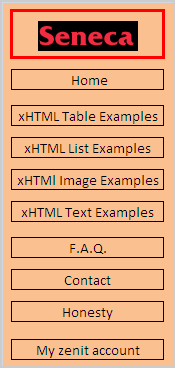

|

|
| >> >> Home |
|
Welcome!
|
|
|
|
Greetings and welcome to the xHTML examples pages. There are many things to see
in this page, so feel free to choose any options on the menu bar located on the left hand side. If you have any
questions or doubts feel free to contact me, you can obtain my information on the Contact tab. Please feel confortable
navigating through this website.
|
|
|
|
This page main goal is to ilustrate the use of tables, images, and lists on xHTML.
This page provides some visual examples of how each of them are used and also shows the usage of some common tags or
attributes implemented on tables, images, and lists, allowing the user to determine the difference bewtween them. By
doing this, the user can answer some questions visually and implements these elements learned in their own xHTML.
Also, it ilustrates the use of text tags, showing their differences by comparing them with visual examples.
|
|
|
|
I'm a 20 years old student, currently enrrolled on Seneca's Computer Programming
and Analysis diploma(CPA). I was born in Venezuela, lived there for 16 years. As a student, i've travelled and studied
in several places, such as Aruba and China. One fact about myself is that English is not my strongest language, as it
happens to be my third language just after Spanish and Chinese. I consider myself as a simple guy which can be describe
with few words. I'm also very shy, quite, and humble. I often go to church on sundays because I'm a catholic person.I
have many goals in life, one of them is to become a Seneca graduate, for that reason, I came to Canada to furfill my
goal. Another reason why I came to Canada was because of the insecurity there is in my country, beside that, the
education in Venezuela is very poor. I'm a living person that can certified what i'm saying, comparing myself with
the people around me in Canada, I am very shock with the difference of knowledge they have over me. I'm also a person
that never gives up and tries to give the best in every moment. My hobbies are quite simple, first of all, video games.
I spent most of my time playing them, although once I came to Seneca, that hobby became less frequent. My other hobby
is playing soccer. I have to admit i'm a big fan of soccer, practicing the sports for more than 16 years. My last hobby
is to watch anime(japanese animated cartoons). I Grew up watching anime series, which made me a great fan now in days.
My favorite food, I have so many, because I eat everything but, if I have to choose one, i'll choose Venezuela's
traditional food, Arepas.
|
|
|
|
Here is a link to the a web page that I developed for a client.
|
|
|
|